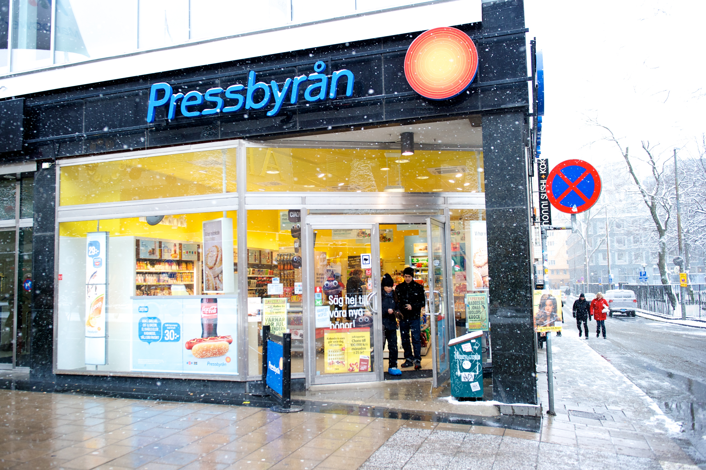
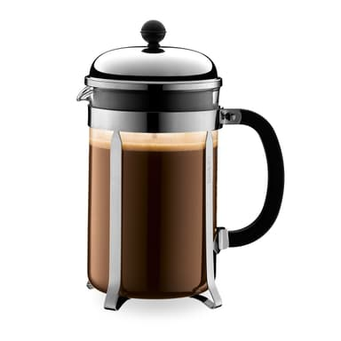

kaffe kaffe kaffe
Get your cup now!
discordlänk blb bla bla
Fransk press givetvis.
Filtret i en fransk press är inte lika finmaskigt som i ett ordinarie så kaffet beåller mer av sin smak och sina eteriska oljor.
Läs mer härHar du nåt favoritställe eller kaffesort, metod eller nåt annat du vill dela med dig om angående kaffe så kan du göra ett inlägg här:
Inlägg